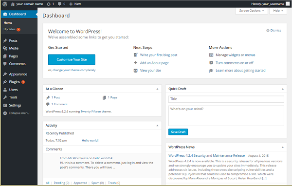

http://your_domain_name_or_IP
You are redirected to the WordPress admin page:
http://server_domain_name_or_IP/wp-admin/install.php
WordPress then prompts you to log in again with your new credentials. Do so now and click Log In.

Installing Wordpress on a LEMP server for Fedora 21
Difficulty: 2
Time: 15 minutes
WordPress has become much more than its humble beginnings in 2003 as a self-hosted blogging tool. It is the Internet’s leading content management system (CMS). This open-source CMS powers all types of sites, including many major brands. With a MySQL and PHP architecture, WordPress is easy to install and has endless options for website configuration thanks to tens of thousands of plugins and themes from its rich and active community.
This article walks you through setting up WordPress on Fedora 21. The steps will be for a non-root user with sudo (administrator) privileges.
sudo privileges set up on your server tar and vim installedtar and vim using yumSelect y at the prompt after each to continue with the installation.
The user can be any user you create. We'll call ours wordpress_user.
Set up your MySQL database with an administrator so that WordPress has a place to store all your site and user information.
Remember that all MySQL code statements must end with a semi-colon (;).
Make sure to create a strong password for best security practices. Keep your username and password handy as you’ll need them later.
GRANT is one of the account management statements the MySQL server notices and loads into memory right away. So a manual reload/restart should not be necessary. But if you like, you can check the permissions using SHOW GRANTS.
FLUSH forces a reload of the cache.
You finished!
tar.gz or zip format. We'll get the tar.gz file.
wget.
MySQL settings…), and replace the corresponding values of the three DB_ variables (DB_NAME, DB_USER, and DP_PASSWORD) with your information.
After you’ve configured WordPress, create the directory and transfer your WordPress files.
wordpress_user.
We now need to update the default configuration files with our WordPress settings. Let’s work from our nginx.conf and php.conf files to configure them for WordPress.
php in the file extension).
Now that we have a backup, let’s start editing the config files.
nginx.conf file.
index.php is added to the index line in the http { section towards the middle of the file (likely already done from your LEMP installation). server { section (probably towards the middle of your file), find the root line and change the root to point to /var/www/wordpress; Some of these changes may have made when you installed your LEMP stack.
After your changes, your file may resemble this example (Some parts are truncated):
# For more information on configuration, see:
# * Official English Documentation: http://nginx.org/en/docs/
# * Official Russian Documentation: http://nginx.org/ru/docs/
user nginx;
worker_processes 1;
error_log /var/log/nginx/error.log;
#error_log /var/log/nginx/error.log notice;
#error_log /var/log/nginx/error.log info;
pid /run/nginx.pid;
events {
worker_connections 1024;
}
...
#gzip on;
index index.php index.html index.htm;
# Load modular configuration files from the /etc/nginx/conf.d directory.
# See http://nginx.org/en/docs/ngx_core_module.html#include
# for more information.
include /etc/nginx/conf.d/*.conf;
server {
listen 80 default_server;
server_name localhost;
root /var/www/wordpress;
...
# redirect server error pages to the static page /50x.html
#
error_page 500 502 503 504 /50x.html;
#
}
}
}php.conf file.
location ~ \.php$ { section, uncomment the root line right under it, and make it point to /var/www/wordpress;
# pass the PHP scripts to FastCGI server
#
# See conf.d/php-fpm.conf for socket configuration
#
index index.php index.html index.htm;
location ~ \.php$ {
root /var/www/wordpress;
try_files $uri =404;
fastcgi_intercept_errors on;
fastcgi_index index.php;
include fastcgi_params;
fastcgi_param SCRIPT_FILENAME
$document_root$fastcgi_script_name;
fastcgi_pass unix:/run/php-fpm/php-fpm.sock;
}
fastcgi_pass and fastcgi_param arguments were configured correctly from your LEMP installation, this should be the only change you need to make.Good news! The rest of your installation uses the WordPress web interface.
http://server_domain_name_or_IP/wp-admin/install.php
WordPress then prompts you to log in again with your new credentials. Do so now and click Log In.
All done! You’ll be taken to the dashboard of your new site.
Congratulations! You have installed WordPress and created the beginning of your own website.
From here you have many options for customizing your WordPress setup. A popular one is making pretty permalinks. See Set up WordPress Pretty Permalinks on Nginx - ALL DISTROS for a step-by-step guide.
To install WordPress on a LAMP stack, see Install WordPress on your LAMP server - Fedora.